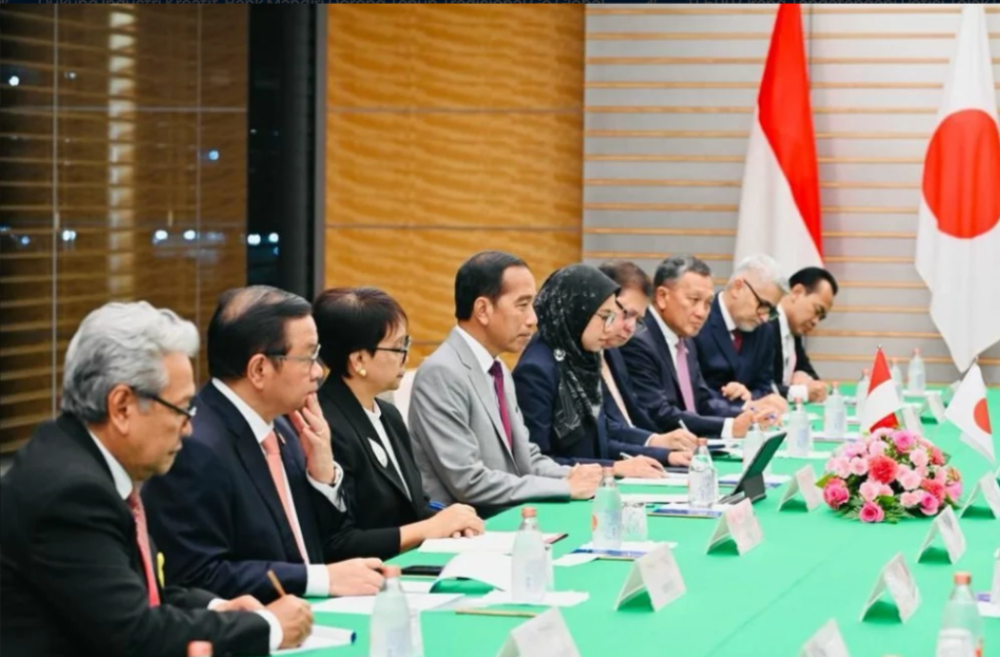
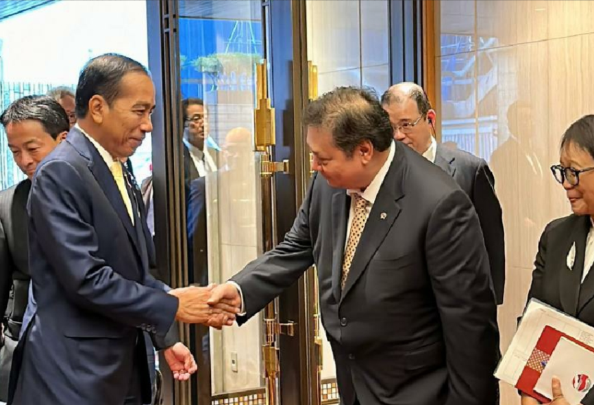

 
Kerja sama bilateral Indonesia dan Jepang merujuk pada hubungan yang terjalin langsung antara kedua negara dengan tujuan untuk menciptakan manfaat bersama melalui kolaborasi di berbagai sektor. Hubungan ini mencakup berbagai bidang, seperti ekonomi, perdagangan, investasi, teknologi, pendidikan, budaya, serta keamanan. Jepang, sebagai salah satu mitra ekonomi terbesar Indonesia, berperan penting dalam menyediakan investasi dan teknologi canggih, terutama di sektor infrastruktur, otomotif, dan energi terbarukan. Sebaliknya, Indonesia berkontribusi dalam kerja sama ini dengan mengekspor sumber daya alam, produk pertanian, dan barang-barang industri. Selain itu, kedua negara juga memperkuat hubungan melalui pertukaran budaya dan pendidikan, serta kerja sama dalam upaya menjaga perdamaian dan stabilitas regional, termasuk dalam isu-isu maritim dan mitigasi bencana. Kerja sama bilateral ini sangat penting dalam memperkuat hubungan jangka panjang yang saling menguntungkan antara Indonesia dan Jepang.
1. Program Pembiayaan Infrastruktur-> Jepang melalui Japan International Cooperation Agency (JICA) mendukung pembiayaan proyek infrastruktur di Indonesia, seperti pembangunan jalan tol, pelabuhan, dan pembangkit listrik tenaga air. Salah satunya adalah pembiayaan pembangunan pembangkit listrik tenaga air di Jawa Tengah.
2.Kerja Sama di Sektor Pendidikan-> Jepang memberikan bantuan pendidikan kepada Indonesia melalui program beasiswa seperti Monbukagakusho, yang memungkinkan mahasiswa Indonesia untuk melanjutkan studi di universitas-universitas Jepang. Selain itu, Jepang juga mendukung program pelatihan untuk pengembangan sumber daya manusia di sektor teknologi dan industri.
3. Kerja Sama Maritim dan Keamanan-> Jepang dan Indonesia bekerja sama dalam bidang keamanan maritim, termasuk penguatan kapasitas penjaga pantai Indonesia melalui pelatihan, serta penyediaan peralatan seperti kapal patroli. Jepang juga terlibat dalam program mitigasi bencana di Indonesia, memberikan bantuan teknis dan sistem peringatan dini tsunami.